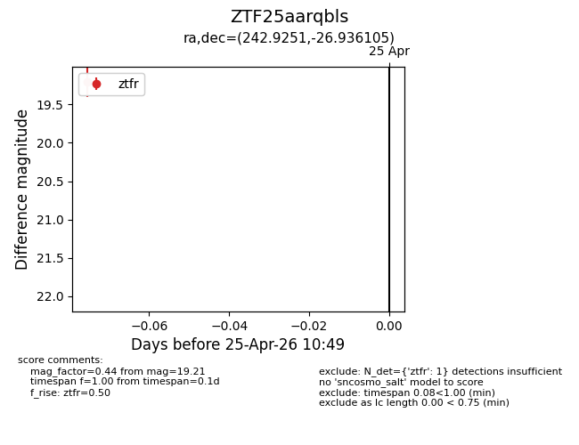
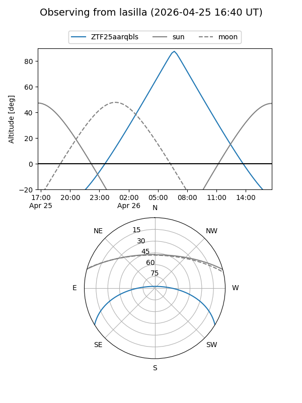
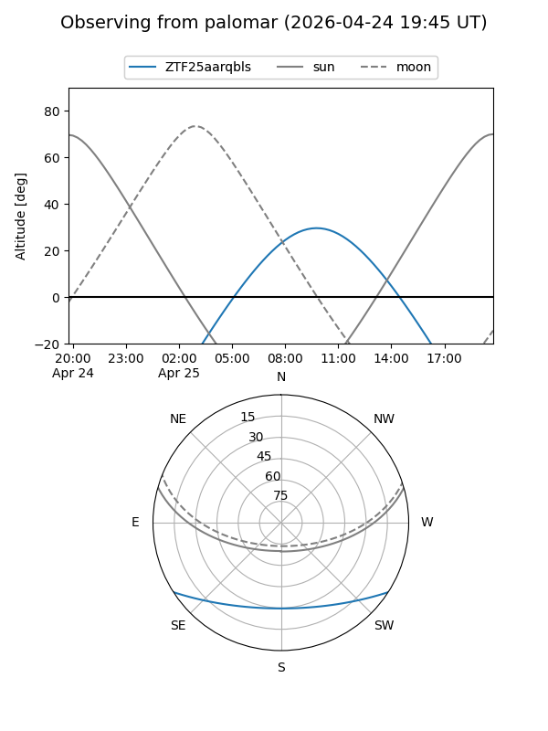

ZTF25aarqbls
Target ZTF25aarqbls at 2026-04-25 10:50
Aliases and brokers:
FINK: link
Lasair: link
ALeRCE: link
alt names
ZTF25aarqbls (ztf,fink_ztf)
Coordinates:
equatorial (ra, dec) = 242.9251,-26.93610
equatorial (HMS+DMS) = 16:11:42.02,-26:56:09.98
galactic (l, b) = (348.7603,+17.62316)
Flags:
Photometry:
last ztfr=19.21
1 ztfr detections
Lightcurve

Visibility


Additional plots